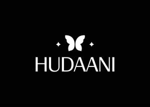

Trade Mark Journal No.2026/008 20 February 2026
UK00004334020 2 February 2026 (3,8,14,18,21,24,25)

- Class 3
- Nail polish; Nail varnish; Varnish (Nail -); Nail glitter; Nail gel; Nail varnishes; Nail enamel; Nail strengtheners; Nail hardeners; Nail makeup; Nail enamels; Nail polish removers; Nail cosmetics; Nail polish remover; Nail polish pens; Nail tips; Nail whiteners; Nail cream; Nail enamel remover; Nail varnish removers; Nail enamel removers; Gel nail removers; Nail polish remover pens; Nail conditioners; Nail paint [cosmetics]; Nail polish removers [cosmetics]; Nail hardeners [cosmetics]; Nail polish top coat; Nail polish base coat; Nail primer [cosmetics]; Nail varnish remover [cosmetics]; Nail tips [cosmetics]; Nail art stickers; Nail decolorants; Nail polishing powder; Nail base coat [cosmetics]; Nail buffing preparations; Nail varnish removing preparations; Nail varnish for cosmetic purposes; Nail care preparations; Cosmetic nail preparations; Nail repair preparations; Tooth polishes; Skin, eye and nail care preparations; Powder for forming sculpted finger nail tips; Cosmetic nail care preparations; Dressings for nail reconstruction; Cosmetic preparations for nail drying; Glue for strengthening nails; False nails; Nails (False -); Artificial nails; Fingernail decals; Lotions for strengthening the nails; Adhesives for false eyelashes, hair and nails; Adhesives for fixing false nails; Adhesives for artificial nails; Preparations for removing gel nails; Fingernail tips; Adhesives for affixing false nails; Cuticle removers; Nail-polish removers; Cosmetics; Skincare cosmetics; Moisturisers [cosmetics]; Cosmetics and cosmetic preparations; Hair cosmetics; Skin fresheners [cosmetics]; Cosmetics for eye-lashes; Cosmetics for suntanning; Anti-aging moisturizers used as cosmetics; Organic cosmetics; Non-medicated cosmetics; Lip cosmetics; Skin moisturizers used as cosmetics; Natural cosmetics; Cosmetics preparations; Mousses [cosmetics]; Make-up palettes containing cosmetics; Tanning gels [cosmetics]; Cosmetics in the form of lotions; Tanning oils [cosmetics]; Beauty care cosmetics; Colour cosmetics; Facial creams [cosmetics]; Self-tanning preparations [cosmetics]; Suncare lotions [for cosmetic use]; Cosmetics for animals; Tanning preparations [cosmetics]; Eyebrow cosmetics; Decorative cosmetics; Multifunctional cosmetics; Milks [cosmetics]; Eye cosmetics; Body creams [cosmetics]; After-sun oils [cosmetics]; Skin masks [cosmetics]; Cosmetics for eye-brows; Tanning milks [cosmetics]; Suntan oils [cosmetics]; Functional cosmetics; Facial gels [cosmetics]; Skin care cosmetics; Fluid creams [cosmetics]; Cosmetics for children; Suntan lotion [cosmetics]; Non-medicated cosmetics and toiletry preparations; Cosmetics in the form of creams; Powder compacts [cosmetics]; Sun-tanning preparations [cosmetics]; Cosmetic hair lotions; Suntanning oil [cosmetics]; Colour cosmetics for the skin; After-sun milks [cosmetics]; After-sun milk [cosmetics]; Cosmetics for use on the skin; Cosmetic moisturisers; Sunscreens [for cosmetic use]; Cosmetic creams and lotions; Bath powder [cosmetics]; Night creams [cosmetics]; Skin recovery creams [cosmetics]; Sun blocking lipsticks [cosmetics]; Body gels [cosmetics]; Cosmetic products in the form of aerosols for skincare; Body and facial creams [cosmetics]; Cosmetics for the use on the hair; Lip stains [cosmetics]; Sunscreen creams [for cosmetic use]; Sunscreen [for cosmetic use]; Body care cosmetics; Cosmetic soaps; Creams (Cosmetic -); Cosmetic creams; Cosmetics containing keratin; Cosmetic skin fresheners; Hair care lotions [for cosmetic use]; Cosmetics in the form of powders; Dyes (Cosmetic -); Cosmetic dyes; Cosmetics containing panthenol; After-sun lotions [for cosmetic use]; Beauty lotions; Cosmetics in the form of oils; Cosmetic facial lotions; Facial lotions [cosmetic]; Cosmetic suntan lotions; Perfume oils for the manufacture of cosmetic preparations; Colour cosmetics for children; Skin care lotions [cosmetic]; Tissues impregnated with cosmetics; Anti-aging creams [for cosmetic use]; Sun protecting creams [cosmetics]; Cosmetic products for the shower; Anti-ageing creams [for cosmetic use]; Smoothing emulsions [cosmetics]; Skin cleansers [cosmetic]; Perfumed powders [for cosmetic use]; Liners [cosmetics] for the eyes; Moisturising skin lotions [cosmetic]; Cosmetic creams for the skin; Skin creams [cosmetic]; Skin creams [for cosmetic use]; Body and facial gels [cosmetics]; Make-up; Makeup; Skin make-up; Make-up remover; Facial makeup; Make-up for the face; Make-up pencils; Make-up removers; Eye make-up; Powder for make-up; Make-up powder; Powder (Make-up -); Make-up primer; Chalk for make-up; Make-up preparations; Make-up primers; Eyes make-up; Make-up for compacts; Foundation make-up; Make-up foundation; Make-up kits; Lip makeup; Make-up foundations; Theatrical makeup; Make-up removing lotions; Eye makeup; Eye make-up removers; Natural makeup; Make-up base; Make-up removing creams; Make-up for the face and body; Make-up preparations for the face and body; Organic makeup; Eye makeup remover; Make-up removing gels; Make-up removing preparations; Multifunctional makeup; Special effects wax for make-up; Make-up removing milk; Fake blood being theatrical make-up; Make-up removing milks; Hairstyling masks; Makeup setting sprays; Compacts containing make-up; Eyelid doubling makeup; Hair mascara; Cosmetic hair dressing preparations; Hairstyling serums; Facial moisturisers [cosmetic]; Cosmetic facial masks; Facial masks [cosmetic]; Facial beauty masks; Facial concealer; Tissues impregnated with make-up removing preparations; Hair styling lotions; Facial cleansers [cosmetic]; Eye-shadow; Beauty preparations for the hair; Facial wipes impregnated with cosmetics; Hair care creams [for cosmetic use]; Facial creams [cosmetic]; Facial creams [for cosmetic use]; Hair masks; Make-up bases in the form of pastes; Eyeliner; Cosmetic masks; Colour cosmetics for the eyes; Hair moisturisers; Cosmetic hair care preparations.
- Class 8
- Nail clippers; Nail scissors; Nail nippers; Nail buffers for use in manicure; Nail punches; Nail files; Nail buffers; Nail extractors; Extractors (Nail -); Nail polishers (Electric -); Nail skin treatment trimmers; Nail files, electric; Electric nail files; Nail polishers (Non-electric -); Nail files, non-electric; Fingernail clippers; Nail clippers, electric or non-electric; Cuticle tweezers; Manicure and pedicure tools; Nail buffers, electric or non-electric; Cuticle scissors; Cuticle nippers; Electric fingernail polishers.
- Class 14
- Jewellery; Necklaces [jewellery]; Brooches [jewellery]; Jewellery brooches; Jewellery, including imitation jewellery and plastic jewellery; Pendants [jewellery]; Bracelets [jewellery]; Brooches [jewellery, jewelry (Am.)]; Ornaments [jewellery]; Amulets being jewellery; Amulets [jewellery]; Pearls [jewellery]; Trinkets [jewellery]; Necklaces [jewellery, jewelry (Am.)]; Fashion jewellery; Jewelry; Gold jewellery; Lockets [jewellery]; Jade [jewellery]; Brooches [jewelry]; Jewelry brooches; Brooches being jewelry; Clasps for jewellery; Jewellery charms; Charms [jewellery]; Charms for jewellery; Enamelled jewellery; Pearls [jewellery, jewelry (Am.)]; Ornaments [jewellery, jewelry (Am.)]; Items of jewellery; Jewellery items; Costume jewellery; Decorative brooches [jewellery]; Rings being jewellery; Rings [jewellery]; Trinkets [jewellery, jewelry (Am.)]; Amulets [jewellery, jewelry (Am.)]; Bracelets [jewellery, jewelry (Am.)]; Pewter jewellery; Jewellery stones; Cloisonné jewellery [jewelry (Am.)]; Wristlets [jewellery]; Cloisonné jewellery; Cloisonne jewellery; Charms [jewellery, jewelry (Am.)]; Lockets [jewellery, jewelry (Am.)]; Chains [jewellery, jewelry (Am.)]; Jewellery products; Rings [jewellery, jewelry (Am.)]; Ivory [jewellery, jewelry (Am.)]; Shoe jewellery; Precious jewellery; Crucifixes as jewellery; Necklaces [jewelry]; Agate as jewellery; Pins [jewellery, jewelry (Am.)]; Jewellery chains; Chains [jewellery]; Ivory jewellery; Jewellery in semi-precious metals; Jewellery chain; Medallions [jewellery, jewelry (Am.)]; Jewellery caskets; Paste jewellery [costume jewelry (Am.)]; Paste jewellery [costume jewelry [Am.]]; Gold plated brooches [jewellery]; Pins [jewellery]; Pins being jewellery; Jewellery boxes; Amber pendants being jewellery; Jewellery for personal adornment; Pendants [jewelry]; Imitation jewellery; Cabochons for making jewellery; Jewellery chain of precious metal for necklaces; Amberoid pendants being jewellery; Gold thread [jewellery, jewelry (Am.)]; Beads for making jewellery; Body jewellery; Silver thread [jewellery, jewelry (Am.)]; Jewellery for pets; Personal jewellery; Jewelry (Paste -) [costume jewelry]; Paste jewelry [costume jewelry]; Jewellery incorporating diamonds; Fake jewellery; Plastic costume jewellery; Imitation jewellery ornaments; Hat jewellery; Clips of silver [jewellery]; Facial jewellery; Jewellery findings; Crosses [jewellery]; Sterling silver jewellery; Jewellery in the form of beads; Bracelets [jewelry]; Paste jewellery; Jewellery (Paste -); Jewellery incorporating pearls; Amulets [jewelry]; Pearls [jewelry]; Jewellery articles; Articles of jewellery; Jewellery made from gold; Jewellery made from silver; Diamond jewelry; Jewellery chain of precious metal for anklets; Wire of precious metal [jewellery, jewelry (Am.)]; Jewellery containing gold; Dress ornaments in the nature of jewellery; Lockets [jewelry]; Jewellery of precious metals; Jewellery chain of precious metal for bracelets; Clasps for jewelry; Jewellery in precious metals; Jewelry stickpins; Trinkets [jewelry]; Threads of precious metal [jewellery, jewelry (Am.)]; Artificial jewellery; Jewellery for personal wear; Decorative pins [jewellery]; Jewellery fashioned from non-precious metals; Jewellery cases; Jewellery rope chain for necklaces; Charms [jewelry]; Jewelry charms; Charms for jewelry; Body costume jewellery; Jewellery fashioned of semi-precious stones; Shoe jewelry; Bridal headpieces in the nature of tiaras; Costume jewelry.
- Class 18
- Make-up bags; Make-up boxes; Makeup bags; Make-up cases; Fashion handbags.
- Class 21
- Cosmetics brushes; Applicators for cosmetics; Cosmetics applicators; Containers for cosmetics; Dispensers for cosmetics; Racks for cosmetics; Holders for cosmetics; Make-up brushes; Make-up sponges; Facial sponges for applying make-up; Make-up artist belts; Eye make-up applicators; Applicators for applying eye make-up; Make-up removing appliances; Applicator sticks for applying make-up; Makeup sponge holders; Applicator sticks for applying makeup; Appliances for removing make-up, non-electric; Non-electric make-up removing appliances; Electric make-up removing appliances; Appliances for removing make-up, electric; Eyeliner brushes.
- Class 24
- Jersey fabrics for clothing; Fabric for use in the manufacture of clothing; Textile piece goods for clothing.
- Class 25
- Clothing; Jackets [clothing]; Knitwear [clothing]; Ready-to-wear clothing; Woolen clothing; Furs [clothing]; Garments for protecting clothing; Layettes [clothing]; Clothing layettes; Linen clothing; Headbands [clothing]; Headbands for clothing; Gloves [clothing]; Gloves as clothing; Clothes; Aprons [clothing]; Maternity clothing; Kerchiefs [clothing]; Jerseys [clothing]; Denims [clothing]; Shorts [clothing]; Cashmere clothing; Capes (clothing); Oilskins [clothing]; Gabardines [clothing]; Leather clothing; Clothing of leather; Leather (Clothing of -); Silk clothing; Collars [clothing]; Veils [clothing]; Parts of clothing, footwear and headgear; Knitted clothing; Hoods [clothing]; Windproof clothing; Corsets [clothing, foundation garments]; Embroidered clothing; Wristbands [clothing]; Bandeaux [clothing]; Belts [clothing]; Belts for clothing; Rainproof clothing; Waterproof clothing; Casual clothing; Visors [clothing]; Jackets being sports clothing; Jackets (Stuff -) [clothing]; Stuff jackets [clothing]; Playsuits [clothing]; Bottoms [clothing]; Clothing for leisure wear; Ready-made clothing; Trunks being clothing; Infant clothing; Latex clothing; Woven clothing; Leisure clothing; Ties [clothing]; Drawers [clothing]; Drawers as clothing; Clothing for sports; Sports clothing; Clothing for children; Athletic clothing; Muffs [clothing]; Bodies [clothing]; Clothing for babies; Tops [clothing]; Clothing for infants; Clothing for cycling; Pockets for clothing; Weatherproof clothing; Water-resistant clothing; Fabric belts [clothing]; Triathlon clothing; Clothing for skiing; Handwarmers [clothing]; Beach clothing; Chaps (clothing); Thermal clothing; Cowls [clothing]; Men's clothing; Fishing clothing; Mitts [clothing]; Braces for clothing; Dance clothing; Jeans; Denim jeans; Denim pants; Blue jeans; Leggings [trousers]; Trousers shorts; Denim jackets; Pants; Trousers; Corduroy pants; Sweatpants; Chino pants; Corduroy trousers; Capri pants; Dress pants; Khakis; Turtleneck shirts; Coats of denim; Denim coats; Corduroy shirts; Leather pants; Casual trousers; Snowboard trousers; Trousers of leather; Slacks; Maternity pants; Dress shirts; Dungarees; Stretch pants; Jogging pants; Shorts; Trouser socks; Camouflage pants; Yoga pants; Shirts; Waterproof pants; Golf trousers; Sweat pants; Cargo pants; Trousers for sweating; Ski trousers; Men's dress socks; Turtleneck sweaters; Dress shoes; Short-sleeved shirts; Jogging bottoms [clothing]; Long-sleeved shirts; Maternity shorts; Ski pants; Casual shirts; Waterproof trousers; V-neck sweaters; Baby pants; Cycling pants; Pants (Am.); Riding trousers; Collared shirts; Lounge pants; Tracksuit bottoms; Pirate pants; Shoes for casual wear; Turtleneck tops; Men's and women's jackets, coats, trousers, vests; Maternity leggings; Open-necked shirts; Sports pants; Weatherproof pants; Overalls; Short trousers; Sweatshorts; Short-sleeved T-shirts; Bib shorts; Sleep pants; Pajama bottoms; Short-sleeve shirts; Blouses; Fleece shorts; Button-front aloha shirts; Shirts for suits; Tank-tops; Warm-up pants; Mock turtleneck shirts; Maternity shirts; Horse-riding pants; Culottes; Sneakers; Hunting pants; Knit shirts; Yoga shirts; Sweatshirts; Snow pants; Nurse pants; Sleeveless jackets; Underwear; Leather dresses; Tap pants; Shirt yokes; Yokes (Shirt -); Gym shorts; Rain trousers; Tracksuit tops; Men's underwear; Turtleneck pullovers; Sweat shorts; Quilted jackets [clothing]; T-shirts; Infants' trousers; Polo shirts; Shirts and slips; Camouflage shirts; Skirt suits; Bermuda shorts; Ramie shirts; Sweaters; Trousers for children; Sweat shirts; Breeches for wear; Suede jackets; Culotte skirts; Leather shoes; Thong sandals; Socks; Sock suspenders; Toe socks; Slipper socks; Footless socks; Woollen socks; Ankle socks; Socks and stockings; Anklets [socks]; Pop socks; Non-slip socks; Anti-perspirant socks; Thermal socks; Sweat-absorbent socks; Yoga socks; Bed socks; Men's socks; Tennis socks; Inner socks for footwear; Sports socks; Water socks; Socks for men; Knitted underwear; American football socks; Japanese style socks (tabi); Japanese style socks (tabi covers); Knitted baby shoes; Knitted gloves; Hosiery; Bootees (woollen baby shoes); Electrically heated socks; Socks, electrically heated; Knee-high stockings; Shoe uppers; Mittens; Hidden heel shoes; Leggings [leg warmers]; Shoe soles; Valenki [felted boots]; Stockings (Heel pieces for -); Heel pieces for stockings; Slipper soles.
HUDAANI GROUP LTD